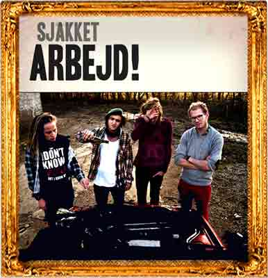

Under Masken is a bar in a basement in the most located part of Aarhus.
We offer you a "hyggelig" athosphere, an open and homie environment and a lot of events. Even the strangest fish is welcome to visit us at the bar.


Watch out for future events
.. remember to hit that going... button at Facebook
We’re having another Hangover-slam at Café Under Masken!
This time exclusively for slam-debutants.
Event link here

Aarhus best reggae DJ is playing at 22:00 and all through the night.
Come down early! It’s gonna be crowded!
Event link here

Sjakket is one of Aarhus best live bands and they are bringing their upright bass and long hair.
beer is 20kr. until 22:00!
Event link here



Under Masken first opened its doors in 1995.
The bar is located in the basement under Hotel Royal in Aarhus and the hotel holds a special place in the story of how Under Masken got started.
Under Maskens owner, Hans Krull, made three art pieces back in the day. They now adorn the entrance of the hotel. As part of his payment Hans was allowed to lease the basement bar.
Since then the bar has been decorated with art from all around the world and quirky reggae music is often heard when walking by the place.
Under Masken makes it hip to be a different kind of fish.